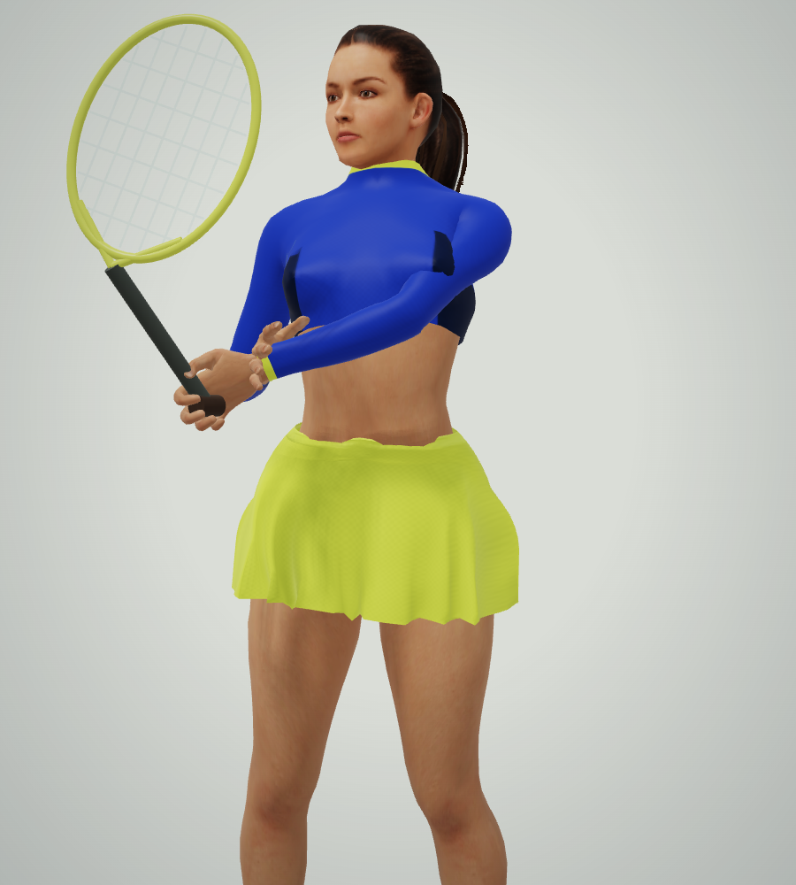
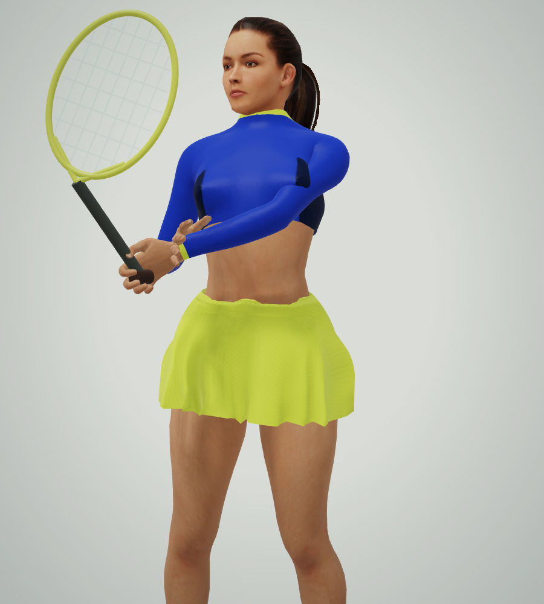

Shoulder and sleeve surface
Matched native renders. The walking and hands-on-hips animation targets are unchanged. The jersey has smoother surface and weight transitions.
Hands on hips
Loaded backhand
Serve recovery
Before
After
Native median frame interval: 16.7ms before and after. This improves surface smoothness; it does not establish flagship character quality. Human evaluation remains pending.